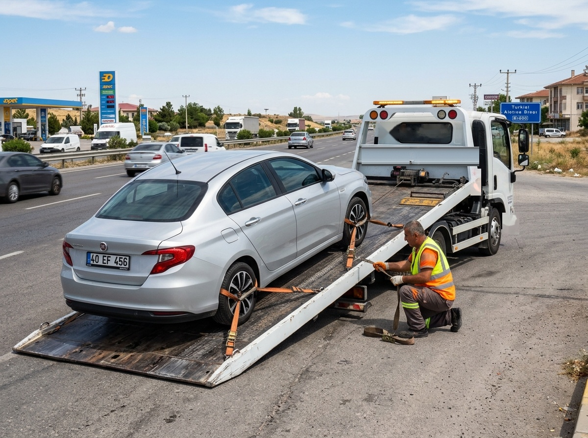

Sıfır Hasar GarantisiKayar Kasa Oto Kurtarma
Hidrolik kayar platformumuz yere sıfır dereceye yakın bir açıyla iner. Özellikle basık modifiyeli araçlar, spor otomobiller, elektrikli araçlar ve lüks SUV'lar için idealdir.
- Tampon veya karter sürtme riski yoktur
- Yumuşak dokulu özel lastik takozları ve gergiler
- Otomatik vitesli araçlara tam uyumlu çekme
- Şehir içi ve çevre yollarında 15 dakikada servis